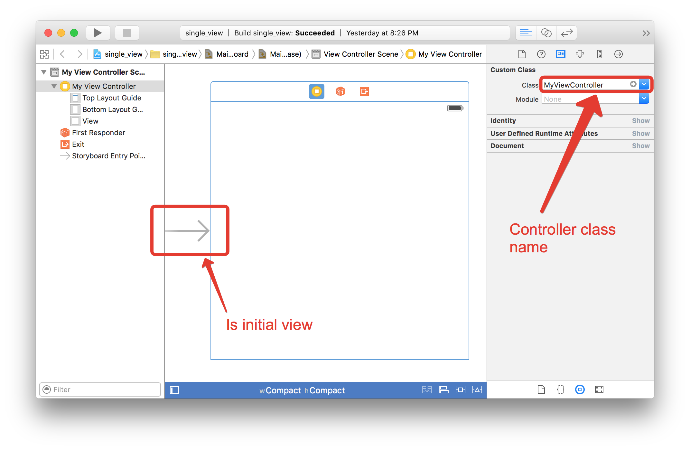

iOS application developing approach¶
Intel Multi OS Engine technology allows developer to use Java language for writing native iOS applications. With that MOE keep approach and methodology generally used for creating application unchanged. Developer still need to use UIViewController classes for handling UI elements and events but all of that can be created fully from Java. Storyboards and xib layout files also used in general way and communicate with Java written controllers.
The following tutorials are available:
All information about UIViewController work process can be acquired from Apple documentation. As example from this The iOS App Life Cycle article.
In this paper we will demonstrate how to start iOS developing based on native UIViewControllers ideology with MOE solution.
First step: Create UIApplicationDelegate¶
The main entry point for all iOS application is the function UIApplicationMain witch takes name of UIAplicationDelegate as parameter and szhould be called from application main at the very beginning. We suggest to combine UIApplicationDelegate implementation and java main static method in a one startup class.
Simple example of such startup class:
public class MyAppMain extends NSObject implements UIApplicationDelegate {
/**
* General entry point for Java language
*/
public static void main(String[] args) {
UIKit.UIApplicationMain(0, null, null, Main.class.getName());
}
@Selector("alloc")
public static native Main alloc();
protected MyAppMain(Pointer peer) {
super(peer);
}
private UIWindow window;
/**
* Delegate method which will be called after application launch
*/
@Override
public boolean applicationDidFinishLaunchingWithOptions(UIApplication application, NSDictionary launchOptions){
return true;
}
@Override
public void setWindow(UIWindow value) {
window = value;
}
@Override
public UIWindow window() {
return window;
}
}
Instance of MyAppMain class will be crated by iOS infrastructure and all overrides methods will be called on corresponding events. The existence of such delegate class is mandatory for any application.
Second step: Create UIViewController¶
View controllers are the core part of iOS application. These manage logic of UI interface and it interaction with entered data. Avery iOS application should have one or more UIViewControler classes. More detailed information can be found in this View Controller programming guide.
Sample code of pure view controller:
@RegisterOnStartup
@ObjCClassName("MyViewController")
public class MyViewController extends UIViewController {
@Owned
@Selector("alloc")
public static native MyViewController alloc();
@Owned
@Selector("init")
public native MyViewController init();
protected MyViewController(Pointer peer) {
super(peer);
}
@Override
public void viewDidLoad() {
/** Your code for view customization */
}
}
First three methods (alloc, init and protected constructor) are mandatory for any NSObject inheritor and well be used our binding system for accessing from Obj-C level.
There is possibility that controller will be instantiated be iOS UI infrastructure during parsing storyboard by the name. In that case class should be registered for Obj-C runtime in advance. For this purpose you can use next annotations:
- @ObjCClassName to specify exact name ob ObjC representation
- @RegisterOnStartup to note that class is used from native and should be loaded on startup
More additional information about binding system can be found in corresponding documentation part Nat/J.
In method viewDidLoad you can customize any view elements or perform any other actions you like. For example let’s add label in center of window:
@Override
public void viewDidLoad() {
view().setBackgroundColor(UIColor.grayColor());
UILabel label = UILabel.alloc().init();
label.setText("Hello MOE!");
label.setTranslatesAutoresizingMaskIntoConstraints(false);
view().addSubview(label);
NSLayoutConstraint cn1 = NSLayoutConstraint.constraintWithItemAttributeRelatedByToItemAttributeMultiplierConstant(
label, NSLayoutAttribute.CenterX,
NSLayoutRelation.Equal,
view(), NSLayoutAttribute.CenterX,
1, 0);
NSLayoutConstraint cn2 = NSLayoutConstraint.constraintWithItemAttributeRelatedByToItemAttributeMultiplierConstant(
label, NSLayoutAttribute.CenterY,
NSLayoutRelation.Equal,
view(), NSLayoutAttribute.CenterY,
1, 0);
view().addConstraint(cn1);
view().addConstraint(cn2);
}
Third step: Instantiate UIViewController¶
There are to way to specify how view controller should be instantiate:
Manually from code Programmer has possibility to manage window, instantiate controllers and set it to drawing directly from java code. In that case no need to use storyboard for specifying initial view controller and other segue logic because it implemented in code. Short sample code demonstrating this approach is next, just put it to UIApplicationDelegate implementation:
@Override
@Selector("application:didFinishLaunchingWithOptions:")
public boolean applicationDidFinishLaunchingWithOptions(UIApplication application, NSDictionary launchOptions) {
// Get current main screen
UIScreen screen = UIScreen.mainScreen();
// Get sizes of the main screen
CGRect bounds = screen.bounds();
// Create new UIWindow and init it
window = UIWindow.alloc().init();
window.setFrame(bounds);
// Set root view controller
MyViewController vc = MyViewController.alloc().init();
window.setRootViewController(vc);
window.makeKeyAndVisible();
return true;
}
With using Storyboard Storyboard is a very flexible and commonly used approach to handling UI layouts and relationships between scenes. More useful information about storyboard and its features can be found in next article.
Multi-OS engine approach is fully compatible with storyboard ideology and programmer can combine it with storyboard obtained in any convenient manner like with using Xcode or UI designer supplied from MOE installer. Main condition is in that storyboard should refers on view controllers by the name specified in corresponding class annotation @ObjCClassName and @RegisterOnStartup annotation should be also applied.
Sample of storyboard created in Xcode is in a picture below.
Note
Worth noting that existing controller is an initial and view controller class name is the same that we used in java annotation.
Such storyboard should be added to MOE project to Info.plist as Main storyboard file base name field .